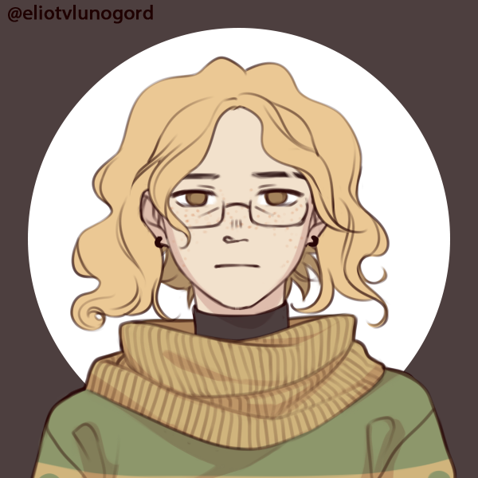
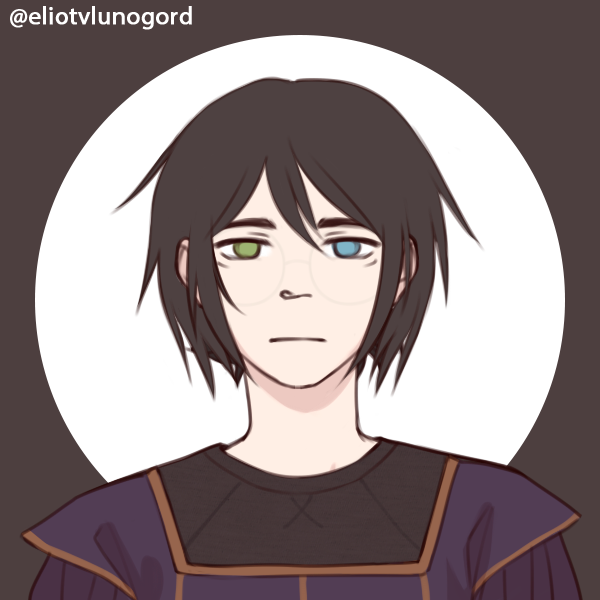

One day you made a tragic decision...
The Artist
You used to have passion and a longing to bring the world to life through your artistic endeavors. Something changed, and lately you have felt nothing at all. No drive, no art, no future. You believe there is something wrong with yourself, society, and the world as a whole but cannot bring yourself to change given the pointlessness of this bleeding world. Something has happened in your life to cause this sudden change, but only you seem to know what exactly it is.
The Historian
You used to be on a quest for knowledge in order to understand the history of society. OVer the course of your studies, you have grown to believe there is something inherintly wrong with the world, which in your mind has made your research a fruitless endeavor. Though you would like nothing more than to bring about a great change in the world, you have given up hope that your contributions to the records of history will prevent the mistakes of the past from happening again.
The Philosopher
There is something wrong with the universe as a whole, but nothing is worse than humanity itself. YHou have known about this for a long time due to your determination to acquire greater understanding about the nature of morality and the inner workings of humanity. You would not even know where to begin to make an effort to heal the world, but you are also beginning to believe that there is nothing about it worth saving. Everything is pointless, including your own worthless existance.